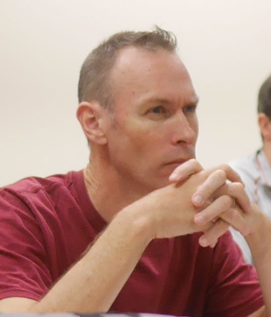
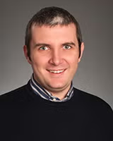
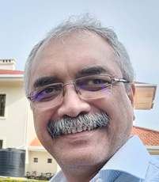
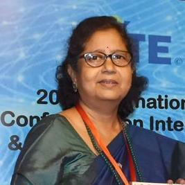
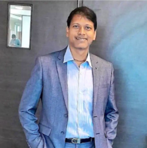
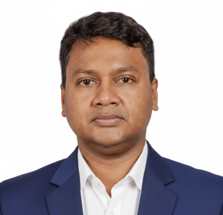
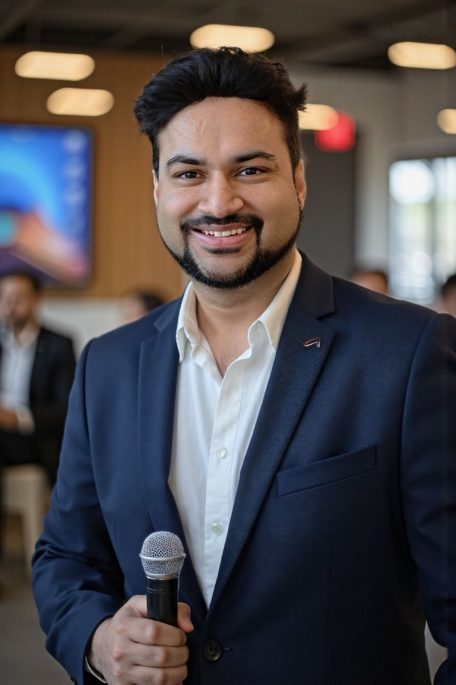
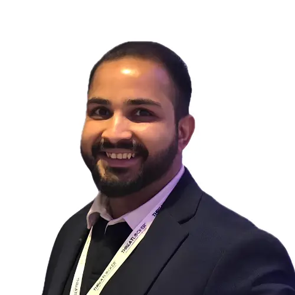

Distinguished dignitaries, researchers, and industry leaders joining ICACSDF 2026.
To be announced soon. Stay tuned for updates.
To be announced soon. Stay tuned for updates.
Distinguished researchers sharing insights on the future of cybersecurity and digital forensics.

Professor Steven Galbraith has a Bachelor degree from the University of Waikato, New Zealand, a Master of Science from Georgia Institute of Technology, USA, and a doctorate from Oxford University, UK. He held research positions at Royal Holloway University of London, the University of Waterloo, the Institute for Experimental Mathematics, Essen, and the University of Bristol...

Prof. Edoardo Serra is an Associate Professor in the Department of Computer Science at Boise State University, USA, where he has served as Co-Director of the Computing Ph.D. Program since January 2023. He received his Ph.D. in Computer Science Engineering from the University of Calabria, Italy, in 2012. He was a Visiting Researcher at the Computer Science Department of the University of California – Los Angeles (UCLA) from October 2010 to July 2011...

Raja Datta is a Professor in the Department of Electronics and Electrical Communication Engineering (E & ECE) at Indian Institute of Technology Kharagpur. He has served as the Head of Computer and Informatics Centre from March 2021 to December 2025 and also as Head of G. S. Sanyal School of Telecommunications from April 2018 till June 2021, both at IIT Kharagpur...

Prof. Sipra Das Bit is a Professor in the Department of Computer Science and Technology at the Indian Institute of Engineering Science and Technology (IIEST), Shibpur, India. She also served as a Visiting Professor in the Department of ICT, Asian Institute of Technology (AIT), Bangkok, in 2017. A recipient of the Career Award for Young Teachers from AICTE, she has more than 35 years of teaching and research experience...

Prof. Goutam Paul is currently a Professor at the Electronics and Communication Sciences Unit (ECSU), Indian Statistical Institute (ISI), Kolkata, and also serves as Visiting Professor at the Centre for Quantum Engineering, Research and Education (CQuERE), TCG CREST, Kolkata...
Prof. Sanjeev Kumar is a Professor in the Department of Mathematics at the Indian Institute of Technology (IIT) Roorkee, where he also serves as Head of the Institute Computer Centre. His research spans Mathematical Image Processing — including computational algorithms for image restoration, image encryption and secret sharing, quantum imaging, and 3D reconstruction — as well as Machine Learning, particularly neural networks and tree-based classifiers and their applications in image processing...
Invited Talk and Industry leaders sharing perspectives from the front lines of applied AI, ML, and security engineering.

Prof. Abhishek Das is a Professor and former Head in the Dept. of Computer Sc. & Engineering at Aliah University, Kolkata. His Research Area is in Medical Image Processing, Machine Learning, Data Science and IoT. He has received a Post Doctoral Research position from University of West Scotland, UK by a Fellowship received from the European Commission. He has also worked as Associate Professor and Head of the Department for two Terms (2017-2019, 2023-2025) at Aliah University, Kolkata and as Assistant Professor in the Dept. of Information Technology, Tripura University (A Central University), India...

Harsh Verma is a Principal Software Engineer – AI/ML at Palo Alto Networks, San Jose, California, where he builds multi-agent, LLM-based Generative AI copilots — including a security policy optimization copilot that detects and resolves network configuration issues — using RAG pipelines and microservice-oriented deployment across multi-modal, distributed data on Google Cloud Platform...

Satyam Rastogi is a cybersecurity leader with 14+ years of global experience, currently Director of Information Security & DevOps at BAMKO and Director of Red Team at Superior Group of Companies (SGC). A CISO-level offensive-security leader, he specializes in enterprise security, Red Team operations, DevSecOps automation, cloud security architecture, and AI-driven security...